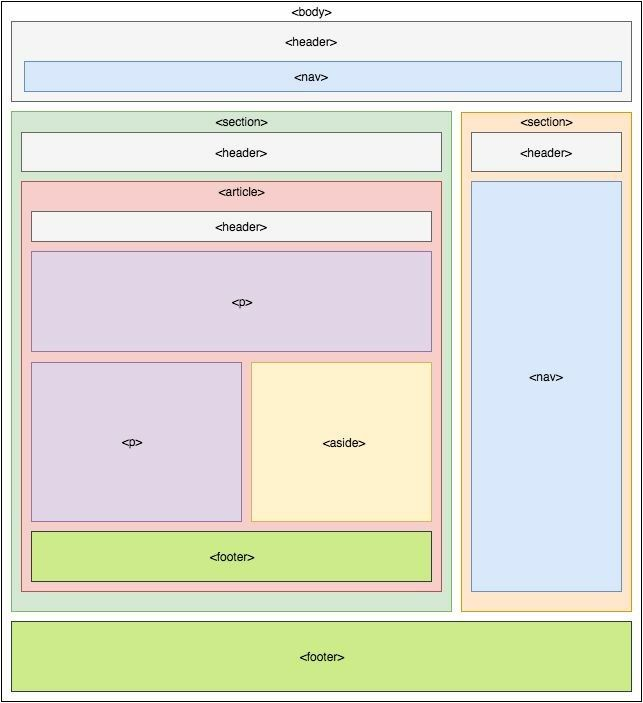

Só estrutura
Esta versão mostra apenas o HTML. Ela funciona, tem conteúdo e o navegador entende sua estrutura, mas ainda não existe um trabalho visual refinado. É como observar uma obra antes do acabamento.
Abrir a página sem CSSHTML e CSS como uma obra
Blog técnico • HTML • CSS • Analogias de engenharia
Estrutura e acabamento na web
Quando comecei a entender desenvolvimento web, uma comparação deixou tudo mais claro: um site funciona muito como uma obra. Primeiro vem a estrutura. Depois, o acabamento. O HTML organiza a base da página. O CSS transforma essa base em algo visualmente resolvido.
Na construção civil, ninguém começa escolhendo a tinta antes de saber onde a parede vai existir. Antes do acabamento, existe a estrutura. Antes da aparência, existe a organização do que está sendo construído. Na web, acontece algo muito parecido: o HTML define o que cada elemento é, enquanto o CSS define como esse elemento aparece.
Isso significa que o HTML trabalha com a base lógica da página: título, parágrafo, imagem, lista, botão e seção. Já o CSS entra depois, cuidando da cor, da tipografia, do espaçamento, do alinhamento e do layout.
Assim como uma obra começa com um projeto estrutural, um site também possui uma organização base. No HTML, essa estrutura é definida por elementos semânticos que indicam a função de cada parte da página.
Nesse tipo de estrutura podemos identificar elementos como header, nav, section, article, aside e footer. Cada um deles representa uma parte da organização lógica do site.
Esta versão mostra apenas o HTML. Ela funciona, tem conteúdo e o navegador entende sua estrutura, mas ainda não existe um trabalho visual refinado. É como observar uma obra antes do acabamento.
Abrir a página sem CSSAqui o conteúdo ganha hierarquia visual, contraste, respiro e identidade. O CSS organiza a experiência de leitura e transforma a mesma base em algo muito mais agradável.
Ver trechos de códigoO HTML marca o que cada coisa é. Ele organiza a página e dá significado ao conteúdo.
<h1>Meu primeiro site</h1>
<p>Estou aprendendo HTML e CSS.</p>
<img src="imagem.jpg" alt="Mesa com notebook">O CSS cuida da apresentação visual. É ele que define cor, fonte, espaçamento, contraste e layout.
h1 {
color: #5c2d91;
text-align: center;
}
p {
line-height: 1.8;
text-align: justify;
}A sequência abaixo mostra a lógica do projeto: primeiro aparece a estrutura da página, depois o CSS entra como acabamento visual.

O CSS foi proposto em 1994 por Håkon Wium Lie, que na época trabalhava no CERN, o mesmo centro de pesquisa associado aos primeiros passos da web. A ideia central era separar a estrutura do conteúdo de sua apresentação visual.
Antes disso, a aparência das páginas era misturada diretamente no HTML, o que tornava os sites mais difíceis de organizar, atualizar e manter. Em 1996, o W3C publicou a primeira recomendação oficial do CSS, consolidando essa separação como um passo importante para a evolução da web.
Em outras palavras: o CSS não surgiu só para “deixar bonito”. Ele surgiu para trazer ordem, flexibilidade e escalabilidade. Foi uma solução de engenharia elegante para um problema real.